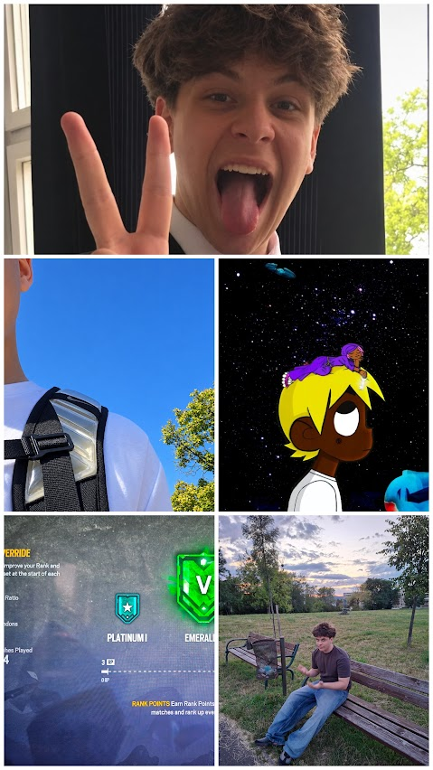

Miskolcon lakok, 14éves vagyok 2012 április 15 ödikén születtem. Szeretek aludni es jatszani videójátékokkal. A Komlóstetői iskolábol jöttem. És jelenleg a Miskolci SZC Kandó Kálmán Informatikai Technikum suliba járok.
A kandót azért választottam mert nagyon tetszett a nyíltnapon a suli kisugárzása. Az infó pedig csak simán érdekel. És az ösztöndíj tök jó.
